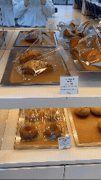
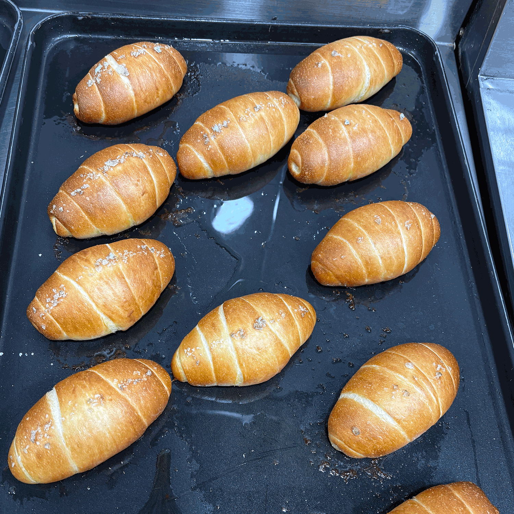
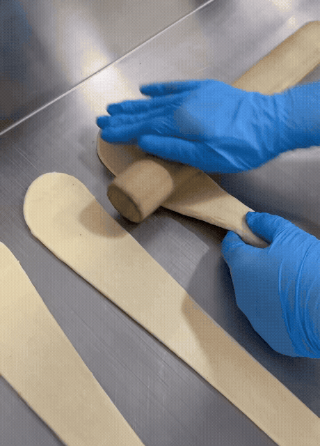
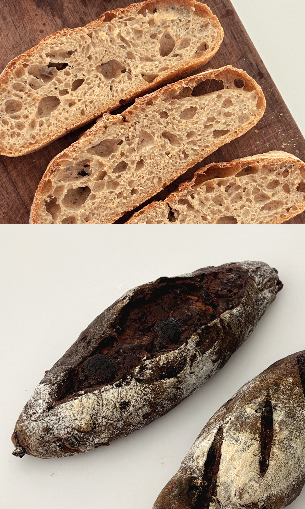
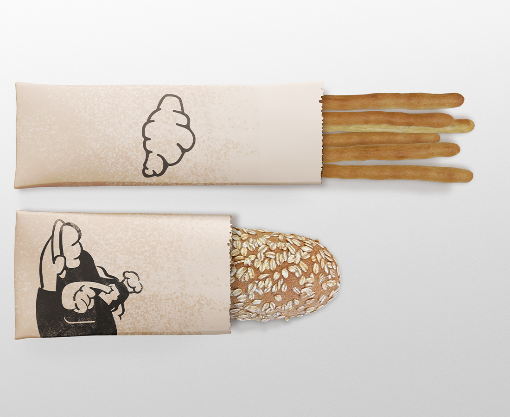

Happiness smells like fresh bread.
bread

By experimenting with different types of flour and fermentation methods, I was able to understand the variations in flavor and texture—realizing how delicate and precise this process can be.





Sweet Bread Varieties

For plain ciabatta, mastering the use of poolish and starter was key.


I found the dough particularly compelling as I examined how variations in hydration impact crumb structure and overall texture.


Made using the stretch and fold method.


To understand the variations in texture—from light table bread to sandwich bread and heavier types—I experimented with steam application and flour granulation.






I applied the dough to culinary uses and found that commercially viable dough was most effective.